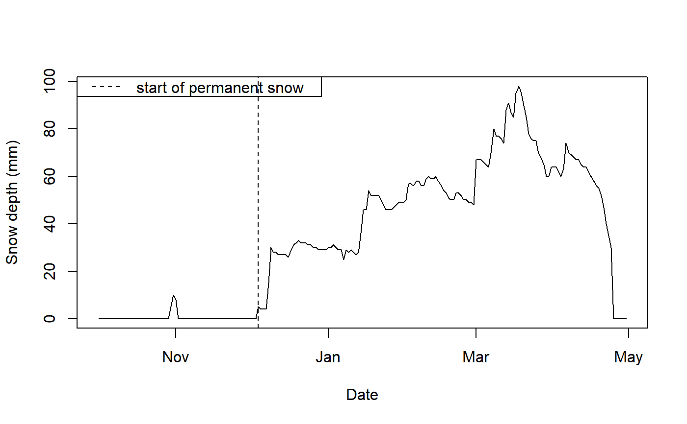

find_date_permanent_snow.RdThis function uses a time series of snow depth to find the beginning of the permanent snow in a given winter. This is based on calculating the minimum amount of snow in a window of a given temporal length to check if, after a given snow event, there was melting and the snow vanished.
find_date_permanent_snow( date, snow_depth, plot = TRUE, temp.window.size = 14, endrule = c("min", "NA", "trim", "keep", "constant", "func")[1], align = c("left", "center", "right")[1], set_start = NULL, debug = FALSE, ... )
| date | vector. Date of the weather records. |
|---|---|
| snow_depth | vector. Snow depth values. |
| plot | logical. Whether the plot of the start date of permanent snow should be plotted or not. Default is `TRUE`. |
| temp.window.size | numeric. Size of the temporal window to calculate the minimum amount of snow, in days. Default is 14 days. |
| endrule | character. String indicating how the values at the beginning and
the end, of the array, should be treated. Default is "min". For more options,
see the function |
| align | character. How should the temporal window be aligned?
Default is "left". For more information, see |
| set_start | POSIX object. Date and time of the start of the winter. Used mainly for debugging, to test other dates. Default is NULL. |
| debug | logical. If debugging, plot also the snow depth values after minimum filtering. Default is FALSE. |
| ... |
Date object. Start date of the permanent snow in a winter.
library(dplyr) data(weather_mittadalen) weather_2019 <- weather_mittadalen %>% dplyr::filter(year == 2019) with(weather_2019, find_date_permanent_snow(date, snow_depth, temp.window.size = 14))#> [1] "2018-12-04 UTC"# not run with(weather_2019, find_date_permanent_snow(date, snow_depth, temp.window.size = 14, set_start = lubridate::ymd_h("2018-11-01 00")))#> [1] "2018-11-01 UTC"